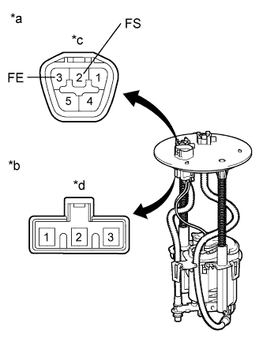

METER / GAUGE SYSTEM > Fuel Receiver Gauge Malfunction |
| 1.CHECK CAN COMMUNICATION SYSTEM |
Check if a CAN communication DTC is output (Click here).
| Result | Proceed to |
| CAN communication DTC is not output | A |
| CAN communication DTC is output | B |
|
| ||||
| A | |
| 2.PERFORM ACTIVE TEST USING INTELLIGENT TESTER (FUEL METER OPERATION) |
Use the Active Test to check the operation of the fuel receiver gauge (Click here).
| Tester Display | Test Part | Control Range | Diagnostic Note |
| Fuel Meter Operation | Fuel receiver gauge | Empty, 1/2, Full | Confirm that the vehicle is stopped with the engine idling. |
|
| ||||
| OK | |
| 3.READ VALUE USING INTELLIGENT TESTER (FUEL INPUT) |
Use the Data List to check if the fuel receiver gauge is operating properly (Click here).
| Tester Display | Measurement Item/Range | Normal Condition | Diagnostic Note |
| Fuel Input | Fuel input signal/Min.: 0, Max.: 127.5 | Current fuel level displayed | Unit: Liters |
|
| ||||
| OK | |
| 4.CHECK HARNESS AND CONNECTOR (COMBINATION METER - FUEL SUCTION PLATE SUB-ASSEMBLY) |
Disconnect the G3 meter connector.
Disconnect the S4 gauge connector.
Measure the resistance according to the value(s) in the table below.
| Tester Connection | Condition | Specified Condition |
| G3-9 (L) - S4-2 (FS) | Always | Below 1 Ω |
| G3-23 (E) - S4-3 (FE) | Always | Below 1 Ω |
| G3-9 (L) - Body ground | Always | 10 kΩ or higher |
| G3-23 (E) - Body ground | Always | 10 kΩ or higher |
|
| ||||
| OK | |
| 5.INSPECT FUEL SUCTION PLATE SUB-ASSEMBLY |
|  |
Remove the fuel suction plate sub-assembly (Click here).
Measure the resistance according to the value(s) in the table below.
| Tester Connection | Condition | Specified Condition |
| A-2 (FS) - B-2 | Always | Below 1 Ω |
| A-3 (FE) - B-3 |
| *a | Front view of wire harness connector (to Fuel Sender Gauge Assembly) |
| *b | Lower Side (to Fuel Sender Gauge Assembly) |
| *c | Connector A |
| *d | Connector B |
|
| ||||
| OK | |
| 6.INSPECT FUEL SENDER GAUGE ASSEMBLY |
Remove the fuel sender gauge assembly (Click here).
Measure the resistance according to the value(s) in the table below.
| Tester Connection | Condition | Specified Condition |
| 2 - 3 | Float position F (upper) | 12 to 18 Ω |
| Float position E (lower) | 405 to 415 Ω |
| *a | Front view of wire harness connector (to Fuel Sender Gauge Assembly) |
| *b | Float position F (upper) |
| *c | Float position E (lower) |
|
| ||||
| OK | ||
| ||